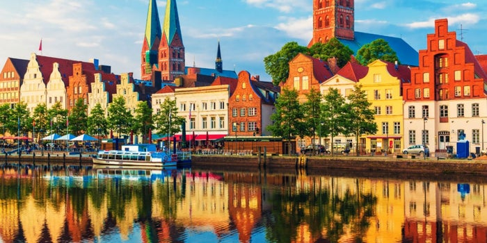

| PAIS |  |
Alemania (en alemán: Deutschland), oficialmente República Federal de Alemania (en alemán: Bundesrepublik Deutschland, Acerca de este sonido pronunciación (?·i), /ˈbʊndəsrepubliːk ˈdɔʏʧlant/), es un país soberano centroeuropeo, miembro de la Unión Europea, constituido en Estado social y democrático de derecho y cuya forma de gobierno es la república parlamentaria y federal. Su capital es Berlín. Está formado por dieciséis estados federados (Bundesländer) y limita al norte con el mar del Norte, Dinamarca y el mar Báltico; al este con Polonia y la República Checa; al sur con Austria y Suiza; y al oeste con Francia, Luxemburgo, Bélgica y los Países Bajos. La ciudad de Büsingen am Hochrhein, enclavada en Suiza, también forma parte de Alemania. El territorio de Alemania abarca 357 386 km² de extensión4 y posee un clima templado. Con casi 83 millones de habitantes, es el país más poblado entre los estados miembros de la Unión Europea, y es el hogar del tercer mayor grupo de emigrantes internacionales. Después de Estados Unidos, Alemania es el segundo destino de las migraciones más popular en el mundo. |
|---|
Alemania es un país de Europa occidental con un paisaje de bosques, ríos, cadenas montañosas y playas en el mar del Norte. Tiene más de 2 milenios de historia. Berlín, su capital, cuenta con sitios de arte y vida nocturna, la Puerta de Brandeburgo y muchos sitios relacionados con la Segunda Guerra Mundial. Múnich es conocida por el Oktoberfest y los salones de la cerveza, incluido el Hofbräuhaus del siglo XVI. Fráncfort, con sus rascacielos, alberga el Banco Central Europeo.
| Ciudad | Actividades |
|---|---|
|
|
|